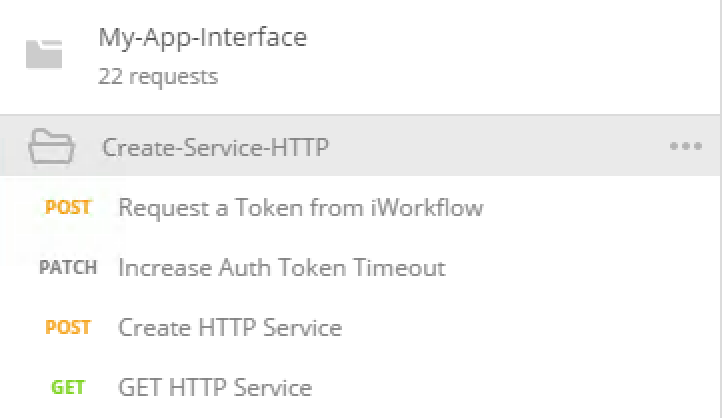
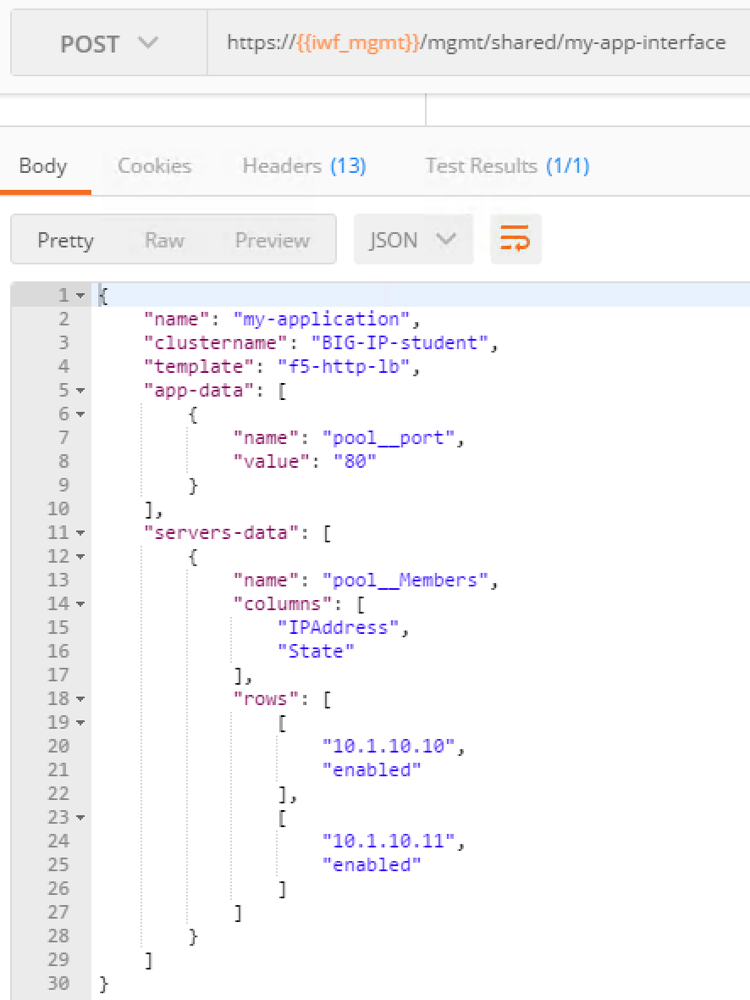
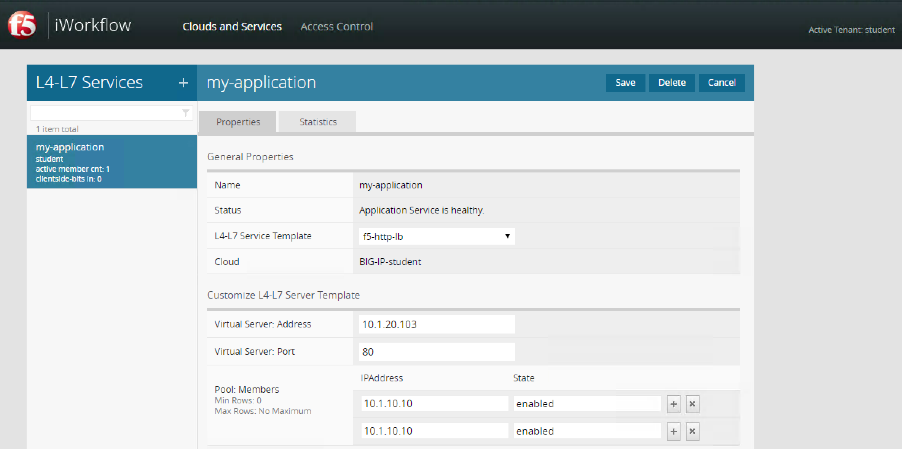
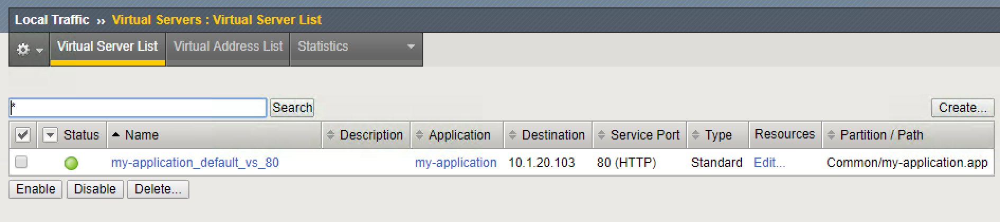
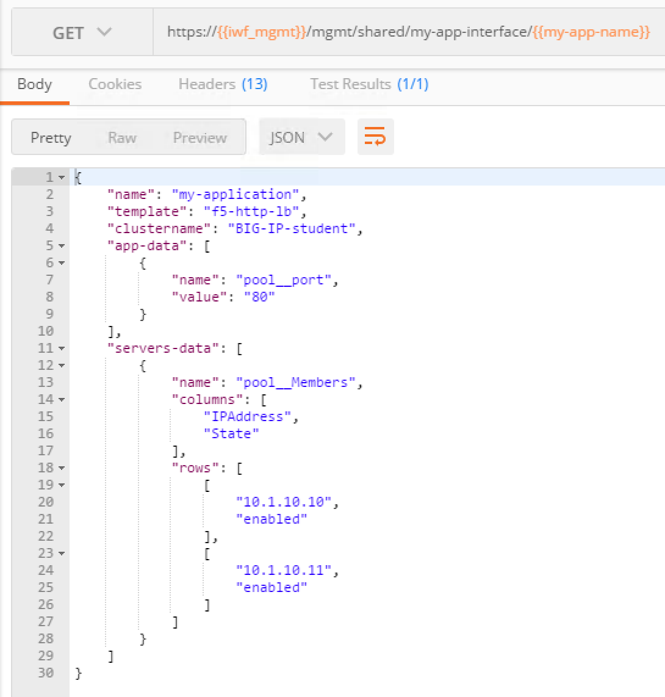
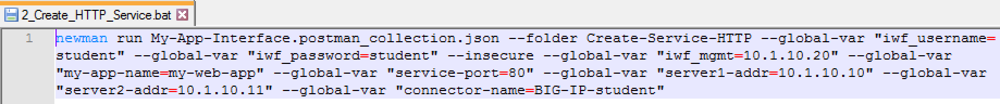
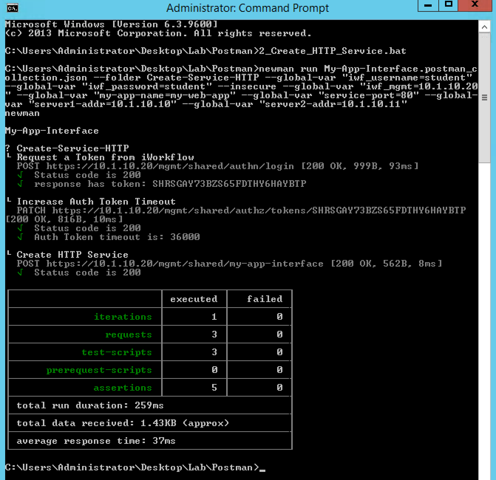
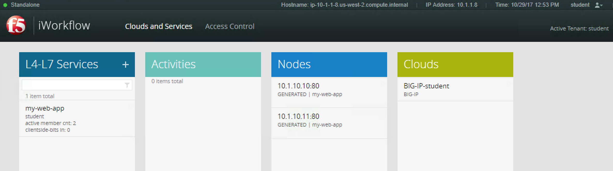
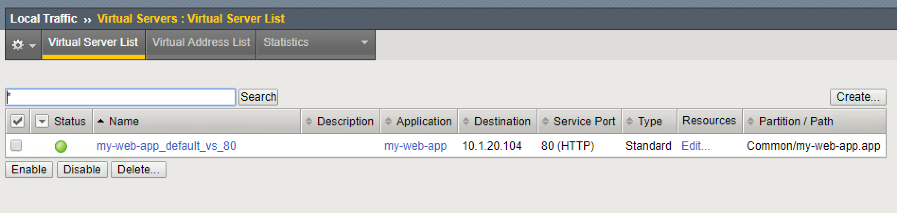
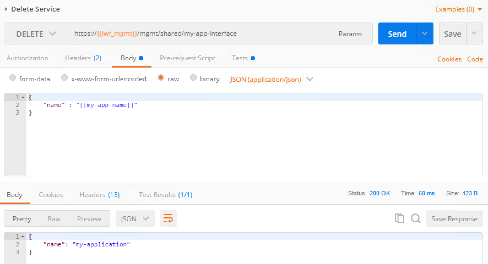

Lab 5.2 - Test and Troubleshoot the Extension¶
Task 1 - Deploy Services via the Extension¶
To deploy services, we need to push POST requests to
/mgmt/share/my-app-interface.
Just like for the RPM installation process, we can either use a Postman collection or use newman.
To see what the extension is doing:
- You can monitor its logs in
/var/log/restnoded/restnoded.log: Open a Putty session on BIG-IP and let the following command run:tail -f /var/log/restnoded/restnoded.log. This way you should see all action logged by the extension. - Connect to your BIG-IP UI (login
admin, passwordadmin) to see services being added/deleted. You have shortcuts in your Chrome browser
Note
Some limitations of the extension / IPAM solution to be aware of:
- Only 8 IPs have been allocated to deploy services in the IPAM simulator (10.1.20.100-10.1.20.107) so don’t try to deploy more services, it will fail
- Here we only handle the use case where we deploy 2 pool members for each app. Don’t try to push only one server or more than 2
Use Postman¶
Perform the following steps to complete this task:
Open your Postman application in your JumpHost and select the collection called
My-App-Interface
Select also
My-App-Interfaceenvironment variables
In this collection you have different things you can do:
- Deploy an HTTP and/or TCP Service
- Delete a Service
For each workflow you want to trigger, make sure that you do the Calls in the order they are set in the folder. Make sure to review the response payload
For example to deploy an HTTP Service, in the folder
Create-Service-HTTP:- Click
Request a token from BIG-IPand click Send - Click
Increase Auth token timeoutand click Send - Click
Create HTTP Serviceand click Send - Click
Get HTTP Serviceand click Send
- Click
You can review that everything happened as expected through the BIG-IP UI.
Note
Your service definition is done in your My-App-Interface
environment. So if you want to deploy multiple services, make sure you
update it accordingly.
Use Postman - Create HTTP Service Example¶
Here is an example of deploying the HTTP Service (
Create-Service-HTTPfolder in POSTMAN):Here is the response from the POST Request:
Output from
/var/log/restnoded/restnoded.logon BIG-IP:Mon, 13 Nov 2017 14:51:40 GMT - info: DEBUG: my-app-interface- onPost - the retrieved IP is: 10.1.20.100 Mon, 13 Nov 2017 14:51:40 GMT - info: DEBUG: my-app-interfaceretrieve connector ID - onPost - the connector name is : BIG-IP-student Mon, 13 Nov 2017 14:51:40 GMT - info: DEBUG: my-app-interface onPost - connector ID is : 58df07a5-f51c-45ac-a35b-406cfb35840c Mon, 13 Nov 2017 14:51:40 GMT - info: DEBUG: my-app-interface update service BODY is: "{ \"name\": \"my-application\", \"tenantTemplateReference\": { \"link\": \"https://localhost/mgmt/cm/cloud/tenant/templates/iapp/f5-http-lb\"}, \"tenantReference\": { \"link\": \"https://localhost/mgmt/cm/cloud/tenants/student\"},\"vars\": [ { \"name\" : \"pool__port\", \"value\" : \"80\"},{\"name\": \"pool__addr\",\"value\": \"10.1.20.100\"}], \"tables\": [\n\t{\n\t\t\"name\": \"pool__Members\",\n\t\t\"columns\": [\n\t\t\t\"IPAddress\",\n\t\t\t\"State\"\n\t\t],\n\t\t\"rows\": [\n\t\t\t[\n\t\t\t\t\"10.1.10.10\",\n\t\t\t\t\"enabled\"\n\t\t\t],\n\t\t\t[\n\t\t\t\t\"10.1.10.11\",\n\t\t\t\t\"enabled\"\n\t\t\t]\n\t\t]\n\t}\n],\"properties\": [{\"id\": \"cloudConnectorReference\",\"isRequired\": false, \"value\": \"https://localhost/mgmt/cm/cloud/connectors/local/58df07a5-f51c-45ac-a35b-406cfb35840c\"}],\"selfLink\": \"https://localhost/mgmt/cm/cloud/tenants/student/services/iapp/my-application\"}" Mon, 13 Nov 2017 14:51:40 GMT - info: DEBUG: my-app-interface - function RestPostRequest, Service created successfully
Logging as
studenton the BIG-IP UI:Check our BIG-IP configuration via the UI:
You can review the configuration via Postman (
Get HTTP Servicein the same folder):
{kind=link}
{kind=link}
{kind=link}
{kind=link}
{kind=link}
Use Newman¶
Launch the command prompt that is pinned in your taskbar

You already have a few scripts setup to deploy/delete services:
2_Create_HTTP_Service: will create an HTTP based service3_Create_TCP_Service: will create a TCP based service4_Delete_HTTP_Service: will delete the created HTTP based service5_Delete_TCP_Service: will delete the created TCP based service
Note
If you want to change the service that is created a little bit, you can edit the relevant bat script. You’ll find all the parameters related to the service in the script. You can open the folder containing all the scripts, right click on the script you want to update and edit it with
Notepad++
{kind=link}
Use Newman - Create HTTP Service Example¶
We launch the command prompt that is pinned in your taskbar
We will launch the script called
2_Create_HTTP_Serviceand review the outputHere is the
/var/log/restnoded/restnoded.logoutput on BIG-IP:Sun, 29 Oct 2017 12:50:32 GMT - info: DEBUG: my-app-interfaceIPAM REST Call - onPost - Sun, 29 Oct 2017 12:50:32 GMT - finest: socket 5 closed Sun, 29 Oct 2017 12:50:32 GMT - info: DEBUG: my-app-interfaceIPAM REST Call - onPost - the retrieved IP is: 10.1.20.104 Sun, 29 Oct 2017 12:50:32 GMT - info: DEBUG: my-app-interface update service BODY is: "{ \"name\": \"my-web-app\", \"tenantTemplateReference\": { \"link\": \"https://localhost/mgmt/cm/cloud/tenant/templates/iapp/f5-http-lb\"}, \"tenantReference\": { \"link\": \"https://localhost/mgmt/cm/cloud/tenants/student\"},\"vars\": [ { \"name\" : \"pool__port\", \"value\" : \"80\"},{\"name\": \"pool__addr\",\"value\": \"10.1.20.104\"}], \"tables\": [\n\t{\n\t\t\"name\": \"pool__Members\",\n\t\t\"columns\": [\n\t\t\t\"IPAddress\",\n\t\t\t\"State\"\n\t\t],\n\t\t\"rows\": [\n\t\t\t[\n\t\t\t\t\"10.1.10.10\",\n\t\t\t\t\"enabled\"\n\t\t\t],\n\t\t\t[\n\t\t\t\t\"10.1.10.11\",\n\t\t\t\t\"enabled\"\n\t\t\t]\n\t\t]\n\t}\n],\"properties\": [{\"id\": \"cloudConnectorReference\",\"isRequired\": false, \"value\": \"https://localhost/mgmt/cm/cloud/connectors/local/58df07a5-f51c-45ac-a35b-406cfb35840c\"}],\"selfLink\": \"https://localhost/mgmt/cm/cloud/tenants/student/services/iapp/my-web-app\"}" Sun, 29 Oct 2017 12:50:32 GMT - info: DEBUG: my-app-interface - function RestPostRequest, Service created successfully
You can check the service got deployed properly on BIG-IP (student tenant) and on your BIG-IP
 
{kind=link}
{kind=link}
{kind=link}
Task 2 - Delete services via the extension¶
Use Postman - Delete HTTP Service Example¶
Here is an example of removing the HTTP service (Delete-Service folder in
Postman):
{kind=link}
Here is the response when we delete the service:
{kind=link}
Output from /var/log/restnoded/restnoded.log on BIG-IP:
Sun, 29 Oct 2017 12:47:38 GMT - finest: socket 4 opened
Sun, 29 Oct 2017 12:47:38 GMT - info: my-app-interface - onDelete()
Sun, 29 Oct 2017 12:47:38 GMT - finest: socket 4 closed
Sun, 29 Oct 2017 12:47:38 GMT - info: DEBUG: my-app-interface - onDelete : VS_IP is: 10.1.20.104
Sun, 29 Oct 2017 12:47:39 GMT - info: DEBUG: my-app-interface - onDelete : Service Deleted, release IP from IPAM: 10.1.20.104
Check that your service disappeared from BIG-IP and BIG-IP
Use newman - Delete HTTP Service Example¶
We will launch the script called 4_Delete_HTTP_Service and review the output
{kind=link}
Here is the /var/log/restnoded/restnoded.log output on BIG-IP:
Sun, 29 Oct 2017 13:00:53 GMT - info: my-app-interface - onDelete()
Sun, 29 Oct 2017 13:00:53 GMT - finest: socket 6 closed
Sun, 29 Oct 2017 13:00:54 GMT - info: DEBUG: my-app-interface - onDelete : VS_IP is: 10.1.20.104
Sun, 29 Oct 2017 13:00:54 GMT - info: DEBUG: my-app-interface - onDelete : Service Deleted, release IP from IPAM: 10.1.20.104
You can check the service got deleted properly on BIG-IP (student tenant) and on your BIG-IP
Note
In the postman collection we also have an example on how to update
the deployed HTTP/TCP service. The folders are called Update-HTTP-Service
and Update-TCP-Service. It shows how you can update an existing service
to disable the first server, for example.